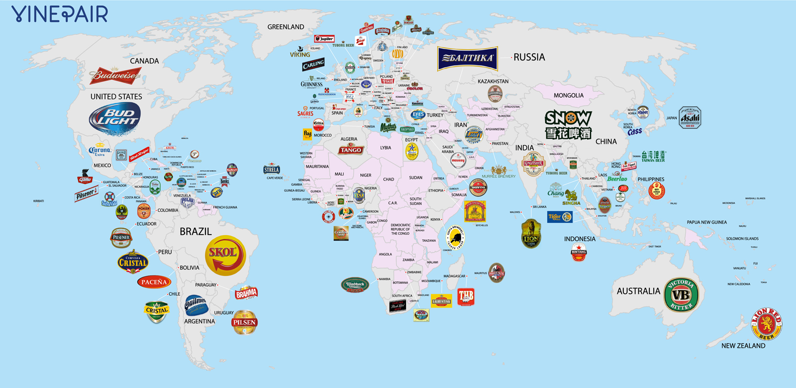

Sör Statisztika
A következő táblázat a sörfogyasztás statisztikáit mutatja be a legnagyobb sörfogyasztó országok alapján:
| Ország | Éves Sörfogyasztás (liter/fő) | Legnépszerűbb Sörfajta | Legnagyobb Sörmárka |
|---|---|---|---|
| Csehország | 140 | Pilsner | Plzeňský Prazdroj |
| Németország | 104 | Pilsner | Beck's |
| USA | 75 | IPA | Budweiser |
| Belgium | 84 | Trappist | Duvel |
| Magyarország | 60 | Pilsner | Hofbräu |
Sörtérkép a Világ Körül
A következő térkép bemutatja a legnépszerűbb sörfajtákat világszerte:
Ez a térkép a világ különböző régióiban elterjedt sörfajtákat ábrázolja. Ahogy láthatjuk, különböző kultúrák különböző típusú söröket kedvelnek.
Érdekességek a Sörfogyasztásról
- Csehország: A világ legnagyobb sörfogyasztója. Évente több mint 140 liter sört isznak egy főre számítva.
- Belgium: A sörkészítés művészete, ahol a különleges Trappist sörök és a lambic sörök kiemelkednek.
- USA: Az IPA (India Pale Ale) sör népszerűsége az utóbbi évtizedekben rohamosan nőtt.
- Magyarország: A pilsner sörök a legnépszerűbbek, különösen a hagyományos magyar márkák.